Integration
From here you can Integrate Timesheet application with other application.

Configure SharePoint API Permission
This setting will work if SharePoint API is enabled, you can configure it by visiting Settings-General.

Integrate with Time-Off Manager
By enabling this toggle, you can integrate the "Time Off Manager" app, which should be installed on the same site.

Integration Settings Guide
Integration settings allow administrators to seamlessly connect Timesheet 365 with various Microsoft 365 services and external tools. Configuring these settings helps automate notification delivery, synchronize schedule calendars, migrate legacy data, and import external tasks directly into timesheets.
Accessing Integration Settings
To navigate to these options, open the application settings menu and select Integration under the core settings dashboard. This opens the central Integration side panel containing all supported connector options.

API Permissions & External Modules
1. Configure SharePoint API Permission
Clicking Click Here adjacent to Configure SharePoint API Permission grants the application necessary authorization to interact with Microsoft 365 tenant resources. Enabling these permissions ensures smooth cross-platform communication and secure data exchange across integrated SharePoint sites.

2. Integrate With Time-Off Manager
Activating Integrate With Time-Off Manager synchronizes approved leave schedules directly into Timesheet 365. Automatically importing absence records prevents users from accidentally logging working hours during active leave windows, simplifying attendance tracking.

Email & Messaging Integrations
1. Send Email from User Mailbox
When the Send Email from User Mailbox toggle is turned on, automated system notifications are sent directly from the initiating user's personal mailbox rather than a generic system address. This provides personalized communication and improves recipient response rates.

2. Shared Email Address
The Shared Email Address field defines a centralized Microsoft 365 shared mailbox used to dispatch standard notification emails. Clicking Validate checks mailbox credentials and delivery permissions prior to saving the configuration.

3. Enable Local Shared Email Address
Enabling Enable Local Shared Email Address redirects automated system communications through a locally managed shared mail account. This setting is designed for organizations operating custom or hybrid email infrastructure environments.

Calendar, Migration & Task Synchronization
1. Sync Calendar Events in Timesheet
The Sync Calendar Events in Timesheet option integrates Outlook calendar appointments straight into the user's weekly timesheet interface. Employees can reference scheduled meetings and events in real time while filling out their daily entries.

2. TS365 Migration from Timesheet Classic
Selecting Configure next to TS365 Migration from Timesheet Classic launches the data migration utility. This tool transfers historical timesheet data and configurations from older platform versions, avoiding tedious manual setup.

3. Integrate With MS Planner
Toggling Integrate With MS Planner connects Microsoft Planner plans directly to Timesheet 365. Linking these systems allows project tasks created in Planner to be made available for time logging inside timesheets.

4. Sync Planner Tasks
Clicking Sync triggers an immediate manual refresh of assigned Microsoft Planner tasks. Performing this synchronization ensures that newly assigned Planner items appear right away in user task dropdowns.

- • Enable MS Planner Integration.
- • Create tasks in Microsoft Planner.
- • Synchronize Planner tasks.
- • Planner tasks appear as Global Tasks.
- • Move Global Tasks to a project.
- • Use those tasks in Weekly Timesheet.
- • Submit timesheet against Planner-created tasks.
- • Automatic synchronization of Planner tasks.
- • Global Task management.
- • Bulk task movement.
- • Project-specific task mapping.
- • Planner-based timesheet tracking.
- • Centralized task management.
- • Eliminates duplicate task creation.
- • Improves productivity tracking.
- • Reduces administrative effort.
- • Enhances collaboration between Teams and Timesheet 365.
- • Simplifies task synchronization.
Knowledge Base – MS Planner Integration Functionality
The MS Planner Integration functionality allows organizations to synchronize Microsoft Planner tasks into Timesheet 365. Planner-created tasks are imported as Global Tasks, which can later be moved to specific projects and used for timesheet submission
Overview
This functionality helps organizations eliminate duplicate task creation and maintain synchronization between Microsoft Planner and Timesheet 365.
Functionality Flow
Step 1 – Enable MS Planner Integration
Navigate to Settings → Integration and enable the 'Integrate With MS Planner' toggle.
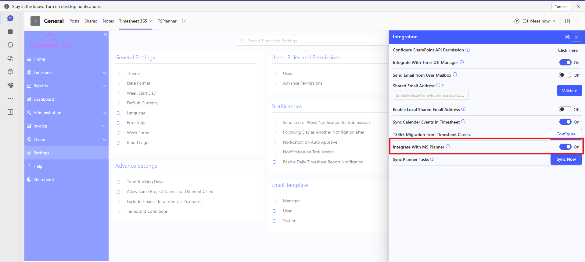
Enable MS Planner Integration
Step 2 – Create Tasks in Microsoft Planner
Create tasks inside Microsoft Planner. These tasks will later be synchronized into Timesheet 365.

Tasks Created in Microsoft Planner
Step 3 – Synchronize Planner Tasks
Click the 'Sync' button inside the Integration section to synchronize Planner tasks into Timesheet 365.
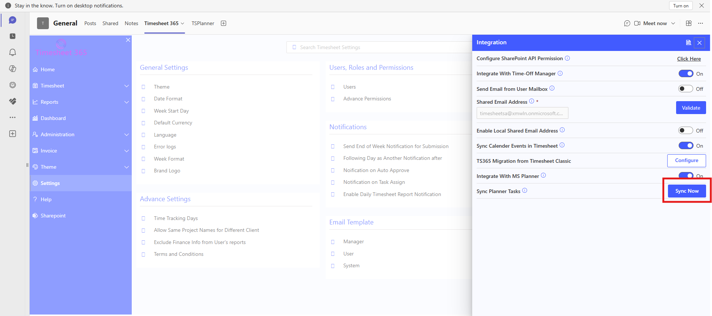
Synchronize Planner Tasks
Step 4 – Open Global Tasks
Navigate to Administration → Tasks and click on the 'Global Task' button.

Open Global Tasks
Step 5 – View Synced Planner Tasks
All synchronized Planner tasks are displayed inside the Global Tasks section.

View Synced Global Tasks
Step 6 – Bulk Move Tasks
Select the required global tasks and click the 'Bulk Move' option.
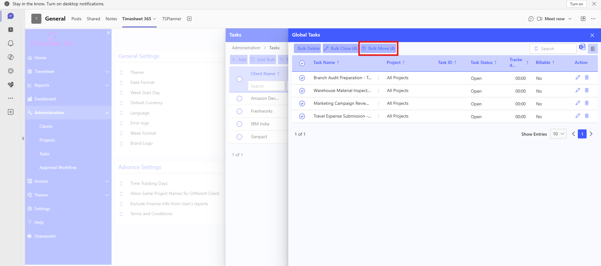
Bulk Move Global Tasks
Step 7 – Move Tasks to Specific Project
Inside the Move Task window, select the Client, Project, Task Start Date, and Billable settings. Then click 'Move'.
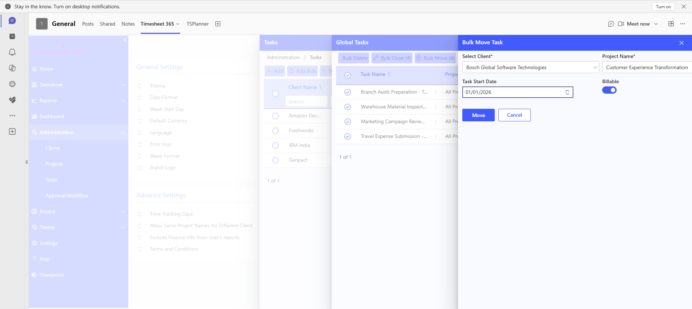
Move Tasks to Project
Step 8 – Use Planner Tasks in Weekly Timesheet
Navigate to Timesheet → Weekly Timesheet and select the required Client and Project. Planner-created tasks are available in the Task dropdown.

Planner Tasks Available in Weekly Timesheet
Step 9 – Submit Timesheet
Select the task, Enter the required hours and click Submit.
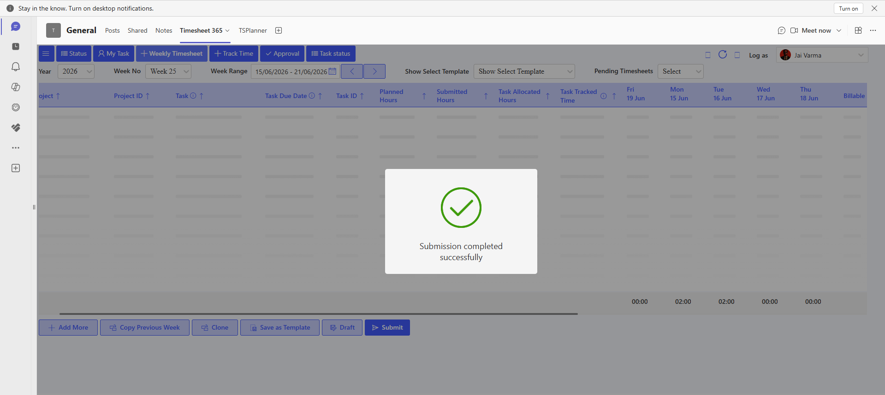
Timesheet Submitted Successfully
Key Features
Benefits
Important Conditions
| Condition | Requirement |
| MS Planner Integration Enabled | Requirement |
| Planner Access Permissions | Requirement |
| Tasks Synchronized | Requirement |
| Tasks Moved to Project | Requirement |
| User Has Project Access | Requirement |
Summary
The MS Planner Integration functionality enables organizations to synchronize Planner tasks into Timesheet 365, convert them into project-specific tasks, and track user effort directly against Microsoft Planner-created tasks.
Excel Migration
Excel Migration is used to import bulk submitted-timesheet data from an Excel or CSV file into Timesheet. After the import is completed, the migrated information can be verified in Weekly Timesheet and in Reports. This document follows the exact order of the screenshots supplied and places every screenshot directly below the feature or step that it demonstrates.
-
Open Excel Migration from Integration
Open Timesheet Settings and locate the Integration section. The Integration section contains several connectivity and migration options, including Excel Migration. Select Excel Migration to open the dedicated Excel Migration panel.
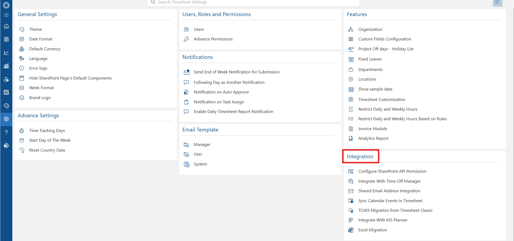
Screenshot 1 – Integration section with Excel Migration option.
-
Excel Migration – Two Available Operations
The Excel Migration panel provides two separate operations: Configure Column Mapping and Import Bulk Timesheet. Configure Column Mapping is used first when the source Excel structure needs to be defined or mapped. Import Bulk Timesheet is then used to upload the actual bulk timesheet file and perform the migration.
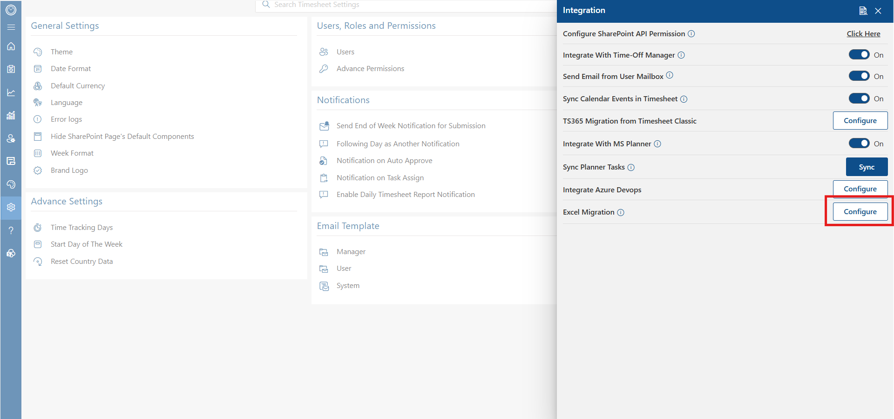
Screenshot 2 – Excel Migration panel showing Configure Column Mapping and Import Bulk Timesheet.
-
Configure Column Mapping – Standard Sample Format OFF
When Use Standard Sample Format is switched OFF, the system uses the manual mapping approach. The administrator can attach the source Excel/CSV file and map its columns to the corresponding Timesheet fields. The screen also provides the User Identifier setting and the instructions needed to prepare the file correctly.
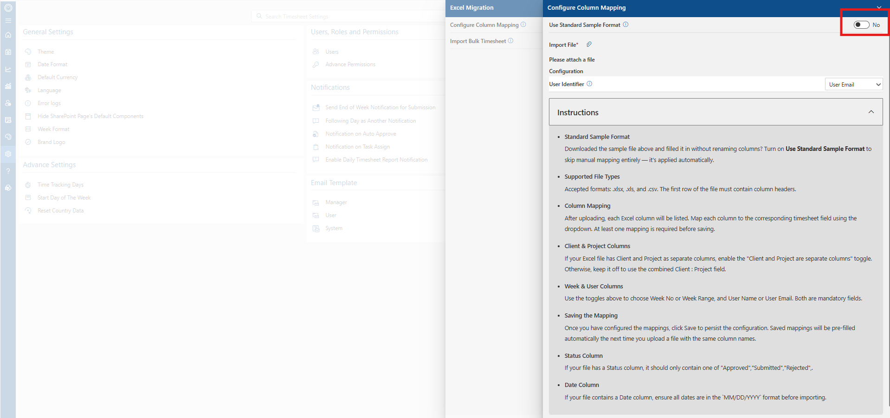
Screenshot 3 – Manual Column Mapping with Standard Sample Format OFF: uploaded Excel file, mandatory fields, column mappings, and field-selection dropdown.
Manual Mapping – How It Works
With Use Standard Sample Format set to No, the system reads the columns from the uploaded Excel file and displays them in the Column Mapping Configuration table. Each Excel column must be associated with the corresponding Timesheet field so the imported values are stored in the correct place.
Mandatory Fields
The yellow notification identifies Client, Project, Date, and User Email as mandatory fields for this configuration. These required mappings must be completed before the migration can proceed; the screenshot also shows the current mapping count as 2 / 9.
Mapping the Columns
The left side lists the Excel columns, while the right side provides the Timesheet Field Mapping selector. In the screenshot, Client is mapped to Client and Project is mapped to Project, while fields such as User Email, Task, Activity, Date, Status, Billable Hours, and Non Billable Hours remain available for mapping.
Selecting a Field
Clicking a mapping selector opens the available Timesheet fields, including Client, Project, User Email, Task, Activity, and Date. Select the field that represents the meaning of the source Excel column, then continue mapping the remaining columns until all required fields are correctly configured.
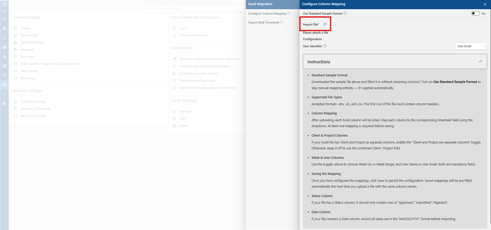
Screenshot 4 – Configure Column Mapping with Use Standard Sample Format set to No.
-
Standard Sample Format OFF – What the Instructions Require
With the standard format disabled, the administrator works with the source file's existing column structure. The displayed instructions state that .xlsx, .xls, and .csv files are accepted and that the first row must contain column headers. The instructions also explain that each Excel column can be mapped to a Timesheet field and that at least one mapping is required before saving.
The same instructions describe Client and Project handling, Week and User fields, saved mappings, Status values, and Date formatting. When Client and Project are separate columns, the corresponding option should be enabled; otherwise the combined Client : Project field can be used.
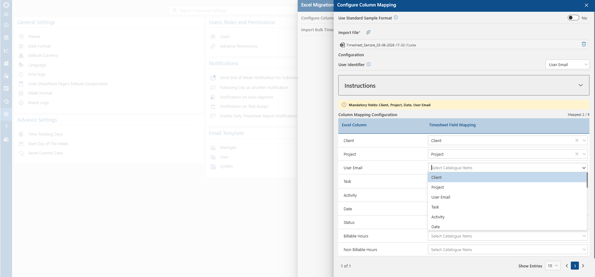
Screenshot 5 – Standard Sample Format OFF showing Import File and the mapping instructions.
-
Configure Column Mapping – Standard Sample Format ON
When Use Standard Sample Format is switched ON, the workflow changes from manual mapping to the standard sample workflow. The application displays a Download Sample File button. The administrator downloads this sample, fills in the data, and keeps the supplied column names unchanged so that the application can recognize the standard structure.
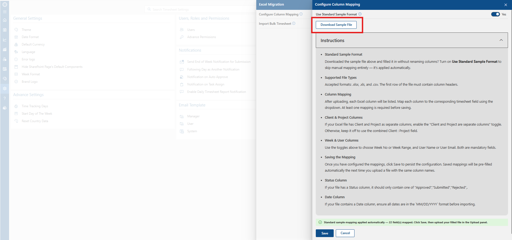
Screenshot 6 – Standard Sample Format ON with Download Sample File and automatic mapping confirmation.
The screen also confirms that standard sample mapping is applied automatically. This means the administrator does not need to manually map every standard column when the file follows the application's sample format.
-
Standard Sample Format – Download and Automatic Mapping
The Download Sample File option provides the standard workbook structure expected by the application. The instructions specifically state that the downloaded sample should be filled without renaming the columns. After the standard format is enabled, the system applies the predefined mapping automatically and displays the mapping status.
The standard-format route is therefore intended to simplify migration when the source data can be prepared using the application's sample structure. The manual mapping route remains available when the source file does not follow that structure.
-
Configure Column Mapping – Save the Mapping
Once the mapping is prepared, save the configuration so that the selected relationships between Excel columns and Timesheet fields are retained. The supplied instructions state that saved mappings can be pre-filled automatically the next time a file with the same column names is uploaded.
This step is especially useful for recurring migrations because the administrator can reuse the same column structure instead of configuring the mapping from the beginning each time.
-
Open Import Bulk Timesheet
After the mapping stage, select Configure for Import Bulk Timesheet. This opens the Import Bulk Timesheet panel. The migration instructions shown on this screen describe the complete process as: configure mapping, upload the data file, preview and verify the rows, and then import the transformed data.
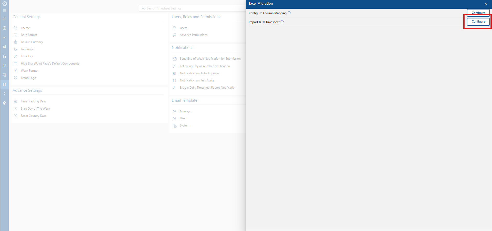
Screenshot 7 – Excel Migration panel with Import Bulk Timesheet Configure action highlighted.
-
Import Bulk Timesheet – Upload the Data File
Inside Import Bulk Timesheet, use Import File to attach the actual bulk timesheet workbook containing the submitted-timesheet records. The instructions state that the supported file formats are .xlsx, .xls, and .csv.
Before proceeding, make sure the required mapping has already been configured. The displayed instructions identify Client/Project, Year, Week, and User as mandatory information that must be mapped before migration is allowed.
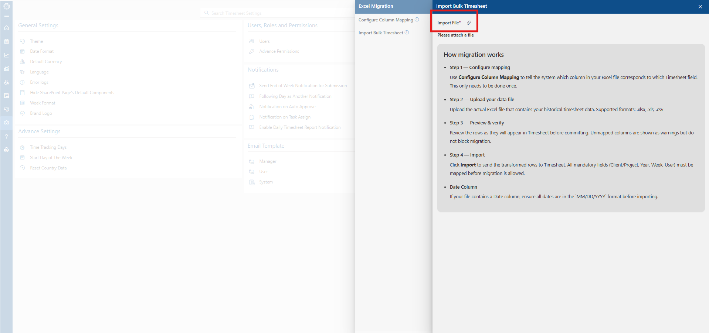
Screenshot 8 – Import Bulk Timesheet with the Import File control and migration instructions.
-
Migration Preview – Review the Uploaded Data
After the file is uploaded, the system displays a Migration Preview before the records are committed. The supplied example shows 51 rows ready for migration and displays columns including Client, Project, Date, Task, Activity, and Billable Hours.
Review the preview carefully to confirm that the imported values have been interpreted correctly. This is the final review stage before selecting the import action, so incorrect mappings or source data should be corrected before continuing.
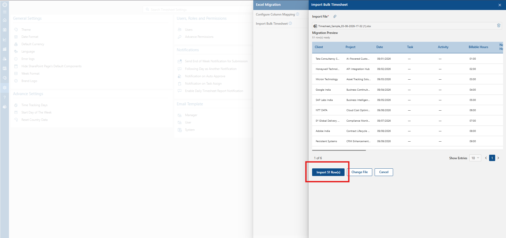
Screenshot 9 – Migration Preview showing 51 rows ready and the Import 51 Row(s) button.
-
Start the Import
After reviewing the Migration Preview, select Import 51 Row(s) or the corresponding Import action displayed for the number of rows in the uploaded file. The system then begins processing the transformed rows for Timesheet.
-
Validation and Processing
After the import is started, the application validates the uploaded rows before completing the migration. The supplied screenshot shows the Migration Preview together with a Validating rows progress area and a completion percentage.
Wait for the validation process to finish before checking the final Timesheet result. The Change File and Cancel actions remain available while the operation is in progress, as shown in the screenshot.
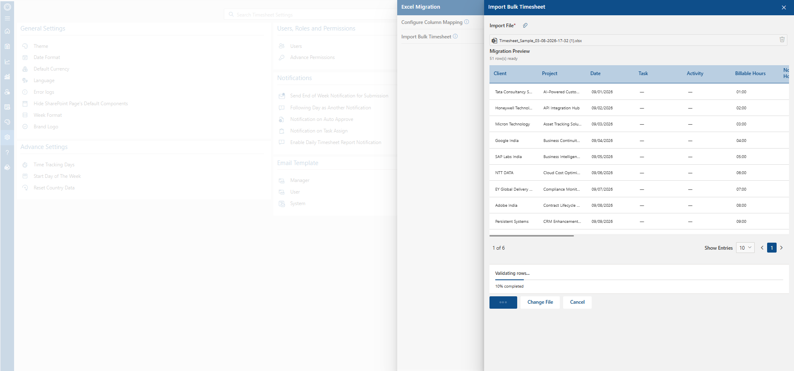
Screenshot 10 – Imported rows undergoing validation.
-
Verify Imported Data in Weekly Timesheet
After the migration is completed successfully, open Weekly Timesheet and verify the imported submitted-hours data. The supplied screenshot shows multiple Client : Project rows, submitted hours, tracked hours, daily hours, and weekly totals.
The migrated records therefore become part of the Weekly Timesheet data instead of remaining only in the uploaded Excel file. Verify that the expected client/project rows, dates, daily hours, and totals match the source data.
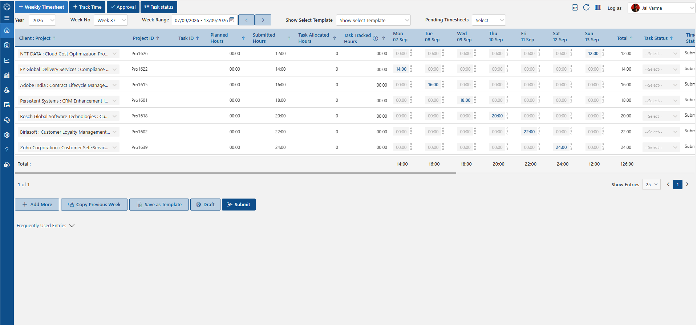
Screenshot 11 – Weekly Timesheet showing the migrated submitted-hours records.
-
Verify Imported Data in Reports
The migrated information can also be reviewed through Timesheet Reports. The supplied report screenshot shows reporting views such as Daily, Weekly, Monthly, Custom, and Itemized, along with Client, Project, Project ID, Department, Project Manager, and daily hour columns.
Use the report as a second verification point after migration. Confirm that the migrated records and their hours are available in the reporting data and that the displayed totals correspond to the imported Timesheet information.
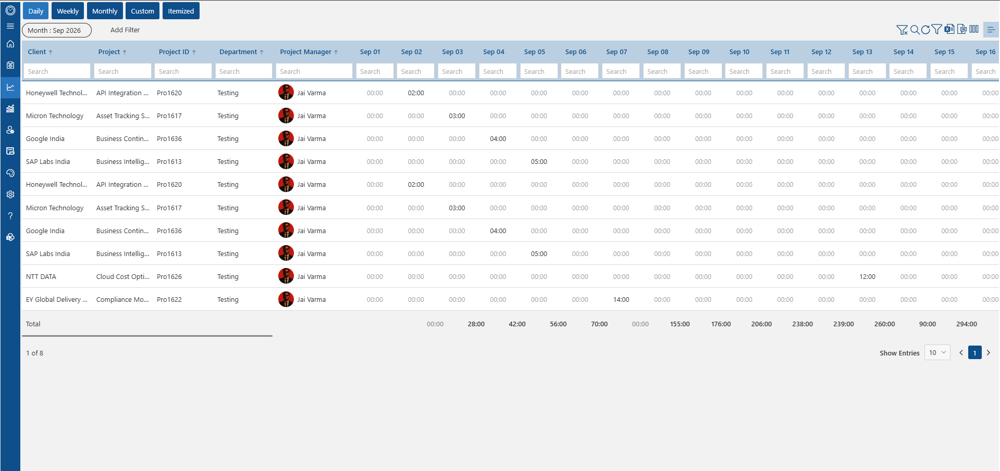
Screenshot 12 – Reports showing the imported timesheet data.
-
Standard Sample Format – ON vs OFF
The two modes are intentionally different. ON is designed for files prepared using the application's standard sample, while OFF is designed for files whose columns need to be mapped manually. Selecting the correct mode is important because it determines how the system interprets the source workbook.
Area Standard Sample Format ON Standard Sample Format OFF Source structure Use the application's downloaded sample structure. Use an existing/custom Excel or CSV structure. Column names Do not rename the sample columns. Existing column names can be mapped manually. Mapping Standard mapping is applied automatically. Administrator maps columns to Timesheet fields. Sample download Download Sample File is available. Manual mapping/upload flow is used. Best suited for Data that can follow the standard sample. Data that already exists in another column structure. -
Complete End-to-End Process
- Open Timesheet Settings and go to Integration.
- Open Excel Migration.
- Open Configure Column Mapping.
- Choose Standard Sample Format ON if the source data will use the application's sample structure; choose OFF if the source file requires manual mapping.
- If ON, download the sample, populate it without renaming columns, and use the automatically applied mapping.
- If OFF, attach/use the source file and manually map its columns to the appropriate Timesheet fields.
- Confirm the mandatory Client/Project, Year, Week, and User information is mapped.
- Save the mapping configuration.
- Open Import Bulk Timesheet.
- Attach the bulk Excel/CSV data file.
- Review the Migration Preview and verify the displayed records.
- Start the import and wait for validation to complete.
- Open Weekly Timesheet and verify the imported daily hours and totals.
- Open Reports and verify that the migrated information is available there as well.
-
File Preparation and Verification Rules
- The supplied instructions list .xlsx, .xls, and .csv as accepted file types.
- The first row of the source file must contain column headers.
- At least one mapping is required before a mapping configuration can be saved.
- Client and Project may be supplied as separate columns when the corresponding option is enabled.
- Week and User are mandatory fields according to the displayed migration instructions.
- Status values should follow the supported values shown in the instructions.
- Dates should use MM/DD/YYYY when a Date column is present.
- Review the Migration Preview before importing.
- Verify the final records in both Weekly Timesheet and Reports.